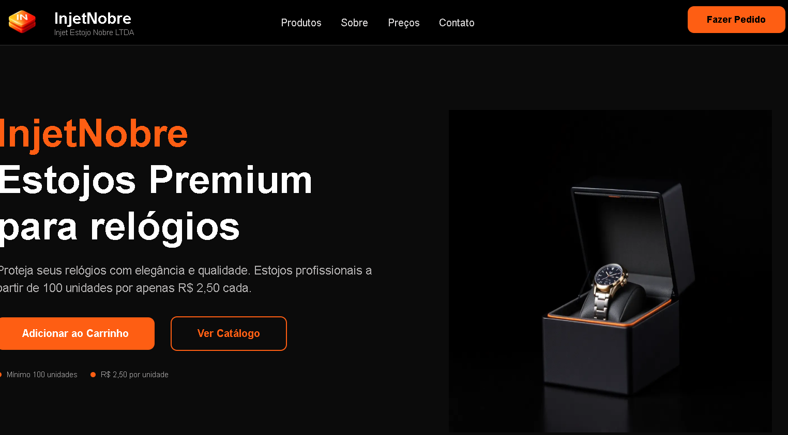
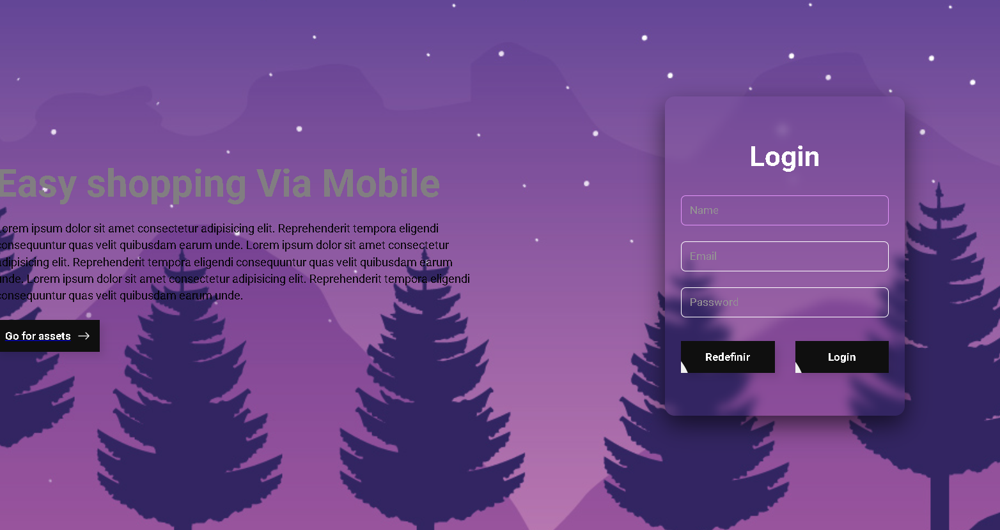
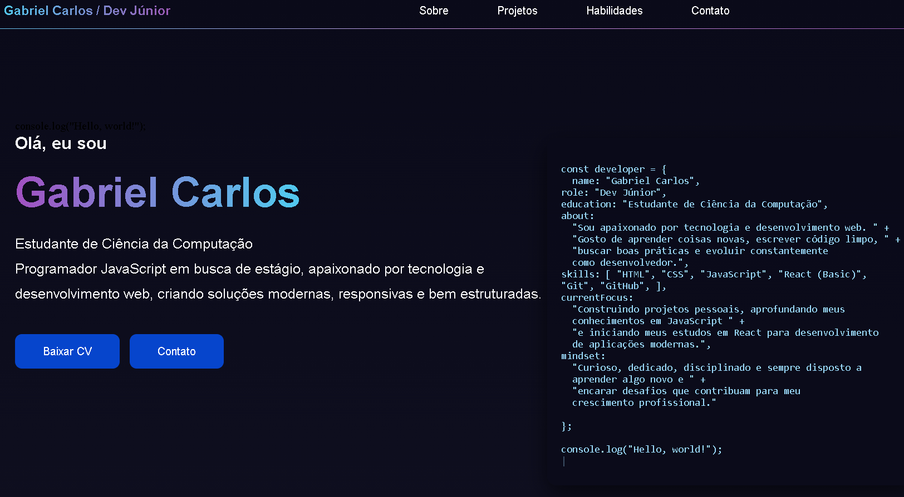
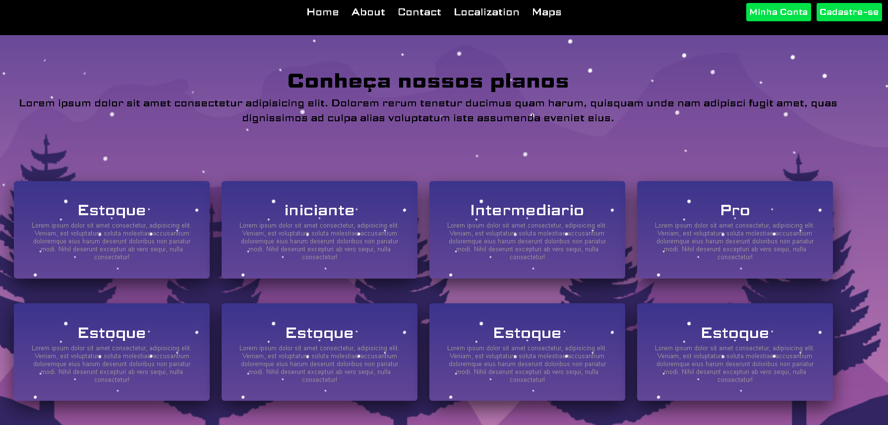

Injet Nobre
Website profissional para empresa de injeção de plásticos

Login
Interface de login com validação de formulário e armazenamento local

Cafeteria
Menu interativo com sistema de pedidos e carrinho de compras

Portifólio
Portfólio pessoal responsivo com animações e efeitos modernos

Organização de Pastas
App para organizar e categorizar arquivos com drag and drop